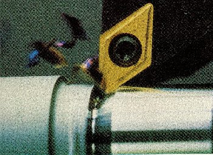

OBJETIVOS Com a finalidade de obter dados de usinabilidade para posterior análise
comparativa entre ligas metálicas com alterações metalúrgicas,
afim de averiguar melhoras de usinabilidade, o Grupo de Ensaios de Usinabilidade
(GEODEF) desenvolve trabalhos de ensaios de usinabilidade, considerando os critérios
de vida de ferramenta de corte, forças de usinagem, qualidade superficial
obtida e análise de forma e tipo de cavaco.  PROCEDIMENTOSPara o ensaio de vida da ferramenta de corte são realizados ensaios
com diferentes velocidades de corte, mantendo-se os outros parâmetros
fixos (profundidade de corte, avanço, geometria da ferramenta e
outros). Através de medições pré-estabelecidas
durante o ensaio levantam-se as curvas de acompanhamento de desgaste e,
com estas, a curva de vida (Taylor).
Para o ensaio de qualidade superficial são medidos os parâmetros Ra, Rz e Rt, variando-se o avanço, a velocidade de corte e o raio de quina da ferramenta de corte. RESULTADOSOs resultados obtidos nos ensaios de usinabilidade têm mostrado
que pode-se ter variações de comportamento de usinabilidade
com pequenas alterações permissíveis de elementos
metalúrgicos para um determinado material. |